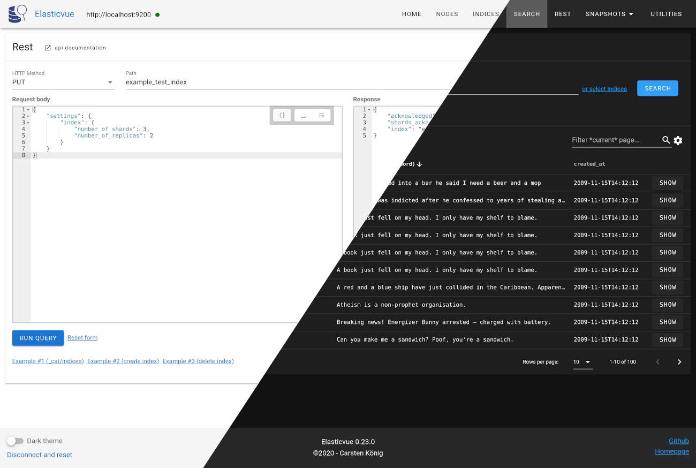

${require('./components/meta.html')}
Elasticvue - Elasticsearch gui for the browser
${require('./components/navbar.html')}
Elasticvue
is a free and open-source elasticsearch gui for the browser.
Features
Cluster overview
Index management
Search interface
REST Query interface
Snapshot management
...
and more

${require('./components/edge_bottom_left.html')}
Get elasticvue
${require('./components/usage.html')}
Checkout
usage
for details on how to configure your cluster to use elasticvue.
${require('./components/footer.html')}